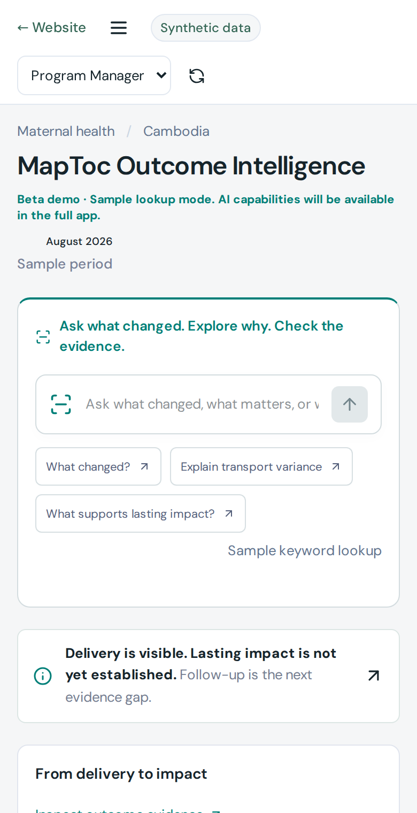

1,240 women reachedResult
Outreach activities reached women in Districts 2 and 4.
Weekly field report · 28 AugMapToc is an AI evidence engine that connects funding, decisions, and outcomes—from program start to finish.

Community health workers, facility support and outreach.
Outreach activities reached women in Districts 2 and 4.
Weekly field report · 28 AugSchedule changed following community feedback.
District team meeting · 26 AugAvailability may affect service delivery.
Facility update · 24 AugCompare attendance and source observations over time.
Evidence gap · 22 AugTHE LIVING PROGRAM RECORDConcept preview · In development
Governments / Development funders / Foundations / Implementers
Connecting investment to evidence along a clear outcome pathway.
Important evidence gets lost when it is not captured as the program unfolds.
Funder named
Base: 914 activitiesImplementer named
Base: 914 activitiesLocation recorded
Base: 636 full-XML activitiesCoded as outcome-reporting
Base: 636 full-XML activitiesSource: MapToc / Code for IATI · 21 Aug 2026 · Preliminary analysis. Method [2]
Capture what matters.
Keep the source.
Reuse the evidence.
MapToc turns existing reports, notes and documents into reviewable evidence signals.
“Met with the district health team yesterday. Attendance seems to have improved after moving outreach sessions to Saturdays. CHWs said women were more available. Still having problems with stock at two facilities and the team is discussing redistribution.”“Attendance seems to have improved after moving outreach sessions to Saturdays. … Still having problems with stock at two facilities…”
“Attendance seems to have improved after moving outreach sessions to Saturdays.” The uncertainty is preserved.
Look up funding, decisions and outcome evidence.
You opened this page directly from a folder. The interactive app needs the included preview server.
Requires Node.js 18+ or Python 3. If double-clicking does not launch it, open Terminal, type bash , drag the command file into the window, and press Return.
Beta demo · Sample lookup mode · AI capabilities will be available in the full app.
White Paper · How capture and review workConnect financial records to the events, decisions and evidence behind delivery.
One cost change. The records that explain it.
Follow-up evidence needed.
MapToc shows what a reported result is connected to—and what evidence is still missing.
“18 outreach sessions delivered in Districts 2 and 4. Delivery was successful.”
What remains unexplained?
Outcome change. Delivery drivers. Source verification.
The same result. Its evidence and context.
See how each record helps explain the reported result.
AI structures. People review. Sources stay attached.
Concept demo · No live uploads or processing.
AI finds the signals. People review them. Sources stay attached.
One living record supports oversight, reporting and learning from start to finish.
Pilot the record with program teams.
Prove the value before scaling.